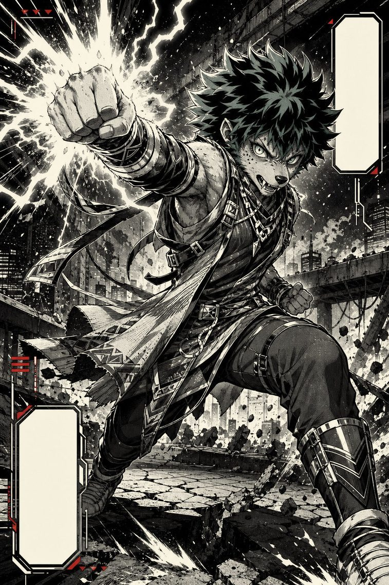

Izuku Midoriya
vs Tanjiro Kamado
Un Detroit Smash porté par neuf générations de force, contre treize formes de sabre enchaînées sans jamais s'arrêter. Le terrain est neutre. La retenue, beaucoup moins.
Duel complet, verdict compris — gratuitLa règle du duel
Registre héroïque, cœur pur : aucun des deux ne cherche à tuer, tous deux cherchent à protéger ou à comprendre. Terrain neutre, sans obstacle ni objet à exploiter.
Terrain
Plaine dégagée, lumière de fin d'après-midi. Un duel à mains nues ou lame nue, sans variable de décor.
Condition de victoire
Neutralisation de l'adversaire — protéger ou comprendre, jamais tuer.
Instantané canon — Deku
My Hero Academia (Kōhei Horikoshi, 2014–2024), pré-bataille finale : les six Alters latents maîtrisés à 100 % avec l'OFA, l'usure cumulée déjà présente, mais avant le Decay de Shigaraki et l'extinction du pouvoir.
Instantané canon — Tanjiro
Kimetsu no Yaiba (Koyoharu Gotōge, 2016–2020), juste avant l'affrontement final contre Muzan : pleine maîtrise du Hinokami Kagura, du Monde Transparent et de l'état altruiste — avant sa transformation temporaire en démon.
Les combattants
Né sans Alter dans une société où environ 80 % de l'humanité en possède un, Izuku Midoriya aurait dû être un quidam invisible. C'est sa rencontre avec All Might, le Symbole de la Paix, qui change tout : le héros lui transmet le One For All, un Alter accumulatif transmis de génération en génération depuis près d'un siècle. Ce pouvoir n'est pas une simple super-force — c'est une réserve d'énergie qui croît à chaque porteur, empilant la puissance physique de neuf générations.
Au fil du manga, Deku débloque les Alters latents des porteurs précédents : Gearshift (modification de l'inertie d'une cible, 2e porteur, Kudo), Fa Jin (stockage et restitution d'énergie cinétique, 3e, Bruce), Danger Sense (détection des dangers imminents, 4e, Hikage Shinomori), Blackwhip (fouets d'énergie, 5e, Daigoro Banjo), Smokescreen (nuage de fumée, 6e, En) et Float (lévitation, 7e, Nana Shimura — la mentor d'All Might, sans lien de sang avec Deku : le fil qui relie les neuf porteurs est martial, pas généalogique).
Le coût est réel : au fil du manga, la surutilisation répétée du One For All au-delà du seuil sûr brise doigts et articulations, bien avant même la bataille finale. C'est le cœur du personnage : Deku se détruit pour sauver. Il ne sait pas faire autrement — un trait retenu dans les scénarios, même si le snapshot choisi précède l'épisode le plus extrême de cette logique : la désintégration momentanée de ses bras par le Decay de Shigaraki, vite réparée, et surtout l'épuisement définitif du One For All qui suit (voir nuances canon).
Fils aîné d'une famille de charbonniers dans les montagnes, Tanjiro voit sa vie basculer quand le démon originel, Kibutsuji Muzan, massacre sa famille et transforme sa sœur Nezuko en démon. Recueilli par Sakonji Urokodaki — ancien Pilier de l'Eau, aujourd'hui retraité du combat actif —, il apprend la Respiration de l'Eau, passe la Sélection Finale et intègre le Corps des Pourfendeurs de Démons.
Mais la véritable révélation vient plus tard : le style qu'il pratique est en réalité le Hinokami Kagura — héritage de son père et, plus fondamentalement, la Respiration du Soleil, le style originel dont dérivent toutes les autres Respirations. Treize formes enchaînées en un cycle continu, conçues pour être exécutées du crépuscule à l'aube sans interruption.
Au fil de ses combats — contre Rui, cinquième Lune Inférieure, puis contre les Lunes Supérieures Daki et Gyūtarō, Hantengu et Akaza — puis contre Muzan lui-même, Tanjiro débloque deux états de perception : le Monde Transparent (Tōmei na Sekai), qui lui permet de voir les muscles, la circulation sanguine et les intentions motrices de l'adversaire, et l'état altruiste (Muga no Kyōchi), qui efface toute présence combative et le rend illisible.
Tanjiro se bat avec un sabre Nichirin — lame noire qui vire au rouge incandescent sous l'effet de la Respiration du Soleil. Son odorat est surhumain : il perçoit les émotions, les mensonges, et surtout l'« ouverture » (suki) chez l'adversaire. C'est un garçon qui pleure en frappant. Qui s'excuse auprès des démons qu'il décapite. Qui refuse de haïr.

Le tableau
| Critère | Deku | Tanjiro |
|---|---|---|
| Force physique Un seul coup de Deku à 100 % génère une onde de choc qu'aucun corps humain n'encaisse sans dommage. | 10 | 6 |
| Vitesse / réflexes Même à faible pourcentage d'OFA, la vitesse de Deku dépasse ce que le Monde Transparent peut compenser. | 9 | 6 |
| Résistance / endurance Tanjiro combat déjà avec des os brisés dans son propre canon ; Deku encaisse aussi, mais paie le prix de l'OFA. | 8 | 7 |
| Puissance destructrice / portée Le Detroit Smash rase l'échelle ; les formes solaires de Tanjiro restent des coups de lame ciblés. | 9 | 5 |
| Technique de combat Treize formes enchaînées contre une puissance brute encore mal raffinée en escrime pure. | 6 | 9 |
| Perception / intelligence tactique L'odorat surhumain et le Monde Transparent lisent un corps mieux que Danger Sense ne lit une intention. | 7 | 9 |
| Volonté / mental Deux volontés qui refusent de haïr leur adversaire — celle de Tanjiro a déjà traversé plus d'épreuves. | 8 | 9 |
| Facteur de duel (arme : corps / lame) Un corps porteur d'une énergie accumulée contre une lame qui vire à l'incandescence — deux armes, aucune neutre. | 7 | 8 |
| Total / 80 | 64 | 59 |
Le tableau chiffré est presque à égalité — Tanjiro compense chaque point de puissance brute par un point de technique ou de perception. Mais ce score serré cache une asymétrie que la seule addition ne capture pas : les deux critères où Deku domine largement (force, vitesse) opèrent à une échelle différente de ceux où Tanjiro reprend l'avantage.
Ce que chacun peut faire
One For All à pleine puissance
Chaque coup porte l'énergie cumulée de neuf porteurs. Un Detroit Smash à 100 % génère une onde de choc massive. En Full Cowl, la puissance est distribuée dans tout le corps.
Blackwhip
Fouets d'énergie noire qui jaillissent du corps. Portée, saisie, redirection à distance.
Fa Jin
Stocke l'énergie cinétique des mouvements répétés et la libère en une explosion ponctuelle.
Gearshift
Modifie l'inertie d'un objet ou d'une personne touchée — au contact.
Danger Sense / Float / Smokescreen
Détecte tout danger imminent dans un périmètre proche, avec lévitation, mobilité tridimensionnelle et nuage de fumée en complément.
Contrôle de la puissance
Deku peut moduler le pourcentage d'OFA utilisé, pour ne pas briser son adversaire.
Hinokami Kagura — 13 formes
Cycle continu de douze formes individuelles enchaînées en une treizième. En duel, il peut enchaîner plusieurs formes en quelques secondes.
Sabre Nichirin rouge
Katana d'acier tranchant, dont la propriété anti-régénération contre les démons est ici sans effet.
Monde Transparent
Vision interne de l'adversaire : muscles, tendons, flux sanguin, contractions préparatoires.
Odorat surhumain
Détecte le suki (ouverture), les émotions, le rythme cardiaque, la fatigue.
État altruiste
Efface toute présence combative — problématique face à Danger Sense, qui cherche un danger perceptible.
Résistance à la douleur
Combat avec des os brisés contre Akaza, affronte Muzan à moitié aveugle. Sa volonté ne cède pas tant que son cœur bat.
L'asymétrie
Deku l'emporte dès que la vitesse pure entre en jeu.
— ce que chaque combattant doit accomplir —
Tanjiro l'emporte s'il frappe avant que l'écart de puissance ne se fasse sentir.
Nuances canon
Rien dans My Hero Academia ne montre Deku encaisser une lame tranchante à pleine puissance, ses adversaires étant presque toujours des utilisateurs d'Alters plutôt que des escrimeurs — la question reste donc sans réponse canon certaine. Les scénarios ci-dessous partent du principe le plus prudent : une frappe nette du Nichirin blesserait Deku comme n'importe quel adversaire, sans certitude absolue sur la profondeur des dégâts, plutôt que de trancher arbitrairement en faveur de l'un des deux camps.
Le pouvoir le plus connu du Nichirin de Tanjiro — inhiber la régénération des démons — ne joue ici aucun rôle : Deku n'est pas un démon. Cette propriété canon, décisive dans nombre des combats de Tanjiro, est donc mise entre parenthèses pour ce match-up.
L'usure cumulée de l'OFA — doigts et articulations brisés par l'usage répété — est réelle et documentée dès les premiers arcs : ce snapshot la retient à juste titre. Durant la bataille finale contre Shigaraki / All For One, un tout autre événement survient : au contact direct du quirk Decay de Shigaraki, lors de la séquence où Deku retient le jeune Tenko à l'intérieur de son propre mindscape, ses bras se désintègrent jusqu'aux coudes.
Mais cette blessure spectaculaire n'est pas définitive — dans ce même arc, Aizawa les régénère en quelques minutes grâce à un fragment de la corne d'Eri (son pouvoir de rembobinage) ; Deku achève d'ailleurs le combat contre All For One avec ses deux bras, et les conserve jusqu'à l'épilogue, huit ans plus tard. Ce qui, en revanche, ne revient jamais, c'est le One For All lui-même : épuisé par cette bataille, le pouvoir s'éteint pour de bon — et c'est cette perte-là, pas celle de ses bras, qui referme véritablement l'arc du personnage. Cette fiche retient donc l'usure cumulée sans emprunter l'épisode Decay/bras, qui appartient à un moment de canon distinct et, de toute façon, temporaire.

Les deux scénarios
La plaine est nue jusqu'à l'horizon — pas un rocher, pas un arbre, rien que la lumière rasante de fin d'après-midi et deux silhouettes qui se saluent avec la même retenue. Tanjiro incline la tête, sabre en position basse. Deku s'incline en retour, une légère décharge crépitant déjà le long de ses avant-bras — un pourcentage minimal, presque symbolique.
« Cinq pour cent, » murmure-t-il pour lui-même, plus par habitude que par nécessité. « Peut-être six, avec la marge de... »
Il n'a pas le temps de finir sa phrase. Tanjiro s'est déjà élancé — la première forme du Hinokami Kagura, une ligne de lumière rouge qui devrait, sur n'importe quel adversaire humain, trancher net. Deku se contente d'un pas de côté. Même à ce pourcentage dérisoire, sa vitesse dévore l'espace que le sabre met à parcourir. Un coup de paume au torse, léger, mesuré — juste assez pour repousser Tanjiro de trois mètres sans rien casser.
Tanjiro se redresse, ajuste sa garde, un sourire presque admiratif aux lèvres. Il enchaîne plusieurs formes solaires en quelques secondes, cherchant moins à blesser qu'à cartographier ce qu'il affronte. Deku pare la première avec l'avant-bras — la lame mord, une estafilade fine s'ouvre, un sang chaud qui confirme au moins une chose : le Nichirin peut le toucher. Il dévie la deuxième d'un Blackwhip qui accroche le plat de la lame, et sur la troisième, il accélère. Fa Jin. Une impulsion, et il est déjà dans le dos de Tanjiro avant que celui-ci n'ait fini son geste.
Tanjiro ne se retourne pas au hasard — son odorat, déjà en alerte maximale, a suivi le déplacement mieux que ses yeux ne l'auraient fait. Il pivote, lame traçant un arc parfait vers la gorge de Deku.
Mais Deku l'a vu venir avant même que Tanjiro ne bouge : Danger Sense l'avait averti une demi-seconde plus tôt, cette demi-seconde qui, pour lui, ressemble presque à une éternité. Il recule d'un pas, laisse la lame passer à un centimètre de son torse, et pose simplement la main sur l'épaule de Tanjiro.
« Gearshift. »
L'inertie du pourfendeur s'effondre d'un coup ; ses jambes cessent de répondre, comme si le sol lui-même avait changé de nature sous ses pieds. Tanjiro tombe à genoux, sabre encore en main, corps immobile.
Deku s'accroupit à côté de lui, sincèrement désolé. « Je suis désolé. Je ne voulais pas… »
Tanjiro sourit, sans une once d'amertume. « Non. C'était magnifique. »
Même plaine, même lumière déclinante. Tanjiro entre presque aussitôt dans le Monde Transparent : les fibres musculaires de Deku s'illuminent devant ses yeux, la circulation d'énergie qui parcourt ses membres, et — plus bas, plus discret — une trace ancienne, des articulations reconstruites tant de fois qu'elles portent encore la mémoire de chaque fracture. Un corps qui a payé, et qui continue de payer, pour chaque once de puissance qu'il libère.
Il ne s'engage pas dans la vitesse. Il attend, entre en état altruiste — son odeur s'efface, sa présence combative se dissout dans l'air comme si elle n'avait jamais existé. Le Danger Sense de Deku balaie l'horizon, cherche un danger imminent, et ne trouve rien à quoi s'accrocher.
« C'est... » Deku hésite une demi-seconde, cherchant une menace que ses propres pouvoirs refusent de lui montrer.
C'est trop. Tanjiro explose dans la treizième forme du Hinokami Kagura — treize coups enchaînés en une seule respiration, chacun visant les mains et les poignets, exactement les zones que des années d'usage répété de l'OFA ont déjà fragilisées. Le premier est paré, mais la vibration remonte plus loin qu'elle ne le devrait dans le bras de Deku. Le deuxième esquivé de justesse ; Tanjiro a déjà changé d'angle. Du troisième au cinquième, Deku recule, cherchant un rythme qu'il n'arrive plus à imposer.
Sixième coup : Blackwhip tente de saisir la lame. Tanjiro se contente de glisser hors de portée, comme s'il avait déjà lu le geste avant qu'il ne parte. Septième, huitième — Deku tente Fa Jin, mais le Monde Transparent a vu la contraction se former dans ses muscles une fraction de seconde avant qu'elle ne devienne mouvement, et Tanjiro n'est déjà plus là quand l'impulsion se libère. Du neuvième au onzième, Deku est acculé, cherchant désespérément le contact qui activerait Gearshift — mais Tanjiro ne le laisse jamais assez près.
Douzième coup : la lame rouge s'arrête à un millimètre de la gorge de Deku, immobile, comme suspendue par une décision plutôt que par un manque d'élan.
Treizième forme. Tanjiro rengaine.
« Vos bras portent déjà les marques de bien des combats, monsieur, » dit-il, sans ironie, presque avec respect.
Deku, à genoux, éclate d'un rire doux, sincère. « Tu es incroyablement gentil, tu sais ça ? »
Le verdict
scénarios sur 10
Voici l'écart entre le score chiffré (64 contre 59, quasi à égalité) et le verdict en scénarios (8/10) : la table additionne des critères comme s'ils jouaient sur le même terrain, mais force et vitesse chez Deku ne sont pas de la même nature que la technique et la perception chez Tanjiro. À 100 %, un seul coup de Deku génère une onde de choc que Tanjiro ne peut ni parer avec un sabre, ni encaisser avec un corps humain, aussi renforcé soit-il.
Tanjiro garde une vraie chance dans deux conditions précises : que Deku porte déjà les séquelles d'un usage intensif du One For All, et que le pourfendeur atteigne l'état altruiste assez tôt pour prendre Danger Sense en défaut. C'est le scénario B — mais il exige une perfection d'exécution que même Akaza, en pleine possession de ses moyens, n'a pas réussi à maintenir face à Tanjiro.
Ce qui rend ce duel inoubliable, ce n'est pas le vainqueur. C'est que ni l'un ni l'autre ne veut vraiment gagner. Deku cherche à protéger, pas à vaincre. Tanjiro cherche à comprendre, pas à tuer. Le combat se termine par une poignée de main et une question de Tanjiro : « Est-ce que votre mère va bien ? » Deku sourit : « Oui. Elle est en sécurité. » — « Alors c'est tout ce qui compte. »
À vous
Le snapshot retenu exclut volontairement l'épisode le plus extrême de la bataille finale — bras désintégrés puis réparés — et l'extinction du One For All. Un Deku sans OFA du tout changerait l'équation ; mais un Deku dont les bras viennent d'être régénérés, encore sonné, rendrait-il le scénario B plus probable — ou rien ne l'arrête-t-il vraiment ?
Si vous n'êtes pas d'accord, c'est réussi. Passez la fiche à quelqu'un qui le sera encore moins.
La même fiche, mise en page pour l'impression et le partage.